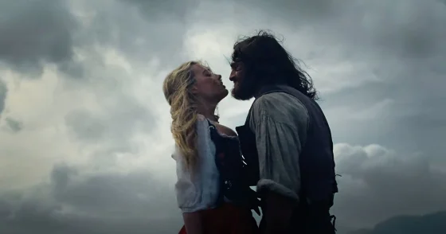

Date de sortie : 13 février 2026
Réalisatrice : Emerald Fennell
Genre : Drame romantique, Époque
Acteurs principaux : Margot Robbie, Jacob Elordi, Shazad Latif, Hong Chau
Note globale : 3/5
Une réinterprétation viscérale et moderne d'un classique gothique. Emerald Fennell réussit à capturer l'obsession adolescente avec une esthétique sublime, malgré quelques accrocs dans la géographie du récit.
⚠️ Attention : Cette critique contient des spoilers sur le film "Wuthering Heights" ⚠️
Résumé : De quoi ça parle ?
Adapté du célèbre roman d'Emily Brontë, "Wuthering Heights" nous plonge dans les landes sauvages du Yorkshire. L'histoire suit l'obsession dévorante entre Catherine Earnshaw (Margot Robbie) et Heathcliff (Jacob Elordi), un orphelin adopté par le père de Cathy.
Entre trahisons familiales, différences sociales et vengeance, leur lien destructeur traverse les années, impactant également la famille Linton. C'est le récit d'un amour qui refuse de mourir, même au-delà de la tombe, traité ici avec la vision moderne et stylisée d'Emerald Fennell.
Un Roméo et Juliette sauvage sur les landes
Pour cette , Emerald Fennell a voulu recréer le sentiment d'une adolescente qui découvre le roman d'Emily Brontë pour la première fois. Et on le ressent ! Le film se rapproche énormément de la tragédie de Roméo et Juliette (le film y fait d'ailleurs directement référence). C’est beau, c’est brut, et j'ai adoré cette approche.
Visuellement, c'est magnifique tout en restant simple. Les plans de Linus Sandgren sont colorés et incroyablement expressifs. C'est la grande force du film : on comprend l'émotion à travers l'image, sans qu'il y ait besoin de longs discours explicatifs.
Un duo électrique : Robbie et Elordi
Je dois dire que j'ai été très étonné par la performance de Margot Robbie en Cathy. Elle apporte une énergie folle au personnage. Quant à Jacob Elordi, il est tout simplement trop fort en Heathcliff. Le rôle lui va MERVEILLEUSEMENT bien ; il incarne cette intensité sombre avec une aisance naturelle.
Leur dynamique de "couple maudit" fonctionne à plein régime. On est aussi épaulé par un casting solide, notamment Shazad Latif en Edgar Linton et Hong Chau en Nelly Dean, qui apportent de la profondeur à ce triangle amoureux toxique.

Musique : Entre score classique et modernité
La bande-son, mélangeant le score d'Anthony Willis et des morceaux de Charli XCX, est globalement très agréable. Elle colle bien à l'ambiance "adolescente" voulue par Fennell. Cependant, j'ai trouvé qu'elle était parfois un peu trop présente ou "abusée" sur certains moments clés, là où un peu plus de sobriété aurait peut-être mieux servi l'émotion.
Des faux raccords qui sortent du film
Malgré toutes ses qualités, le film a des défauts de cohérence qui m'ont fait tiquer. Notamment la maison d'Edgar Linton : je n'ai rien compris à la position des salles ! D'un coup, la chambre de Cathy est juste en face de celle d'Edgar, et la scène suivante, ils semblent être à l'opposé complet de la demeure.
Même souci pour les distances : Cathy semble pouvoir marcher chez Edgar en 5 minutes chrono, et d'un coup, on nous fait comprendre que c'est à 10km et que ça prend une heure. C'est dommage, car ça casse un peu le rythme de cette "belle découverte".

Conclusion
L'histoire reste "basique" dans le sens où elle est prévisible (pas de grands twists ici), mais c'est une force : le film se concentre sur l'émotion pure et la réalisation visuelle. En tant que fan de relations maudites, j'ai été conquis, même si la note est sans doute un peu boostée par mon amour pour ce genre de thématiques.
Note finale : 3/5 ⭐️⭐️⭐️